概述
- 本文阐述 Linux 进程虚拟内存相关概念
一 虚拟内存和物理内存的概念
-
1 进程看到的都是虚拟内存，以为自己占有整个内存以及 CPU 资源。这样做的好处是：
-
- 1.1 就算所有进程或者某个进程的内存需求总和大于实际的物理内存，系统上仍然可以运行起来这些进程，并且可以做到同时运行这些进程。
-
- 1.2 Linux 的虚拟地址空间范围为 0 ～ 4G，Linux 内核将这 4G 字节的空间分为两部分，将最高的 1G 字节（从虚拟地址 0xC0000000 到 0xFFFFFFFF）供内核使用，称为
内核空间。而将较低的 3G 字节（从虚拟地址 0x00000000 到 0xBFFFFFFF）供各个进程使用，称为用户空间。
- 1.2 Linux 的虚拟地址空间范围为 0 ～ 4G，Linux 内核将这 4G 字节的空间分为两部分，将最高的 1G 字节（从虚拟地址 0xC0000000 到 0xFFFFFFFF）供内核使用，称为
-
- 1.3 因为每个进程可以通过系统调用进入内核，因此，Linux 内核由系统内的所有进程共享。于是，从具体进程的角度来看，每个进程可以拥有 4G 字节的虚拟空间。
-
- 1.4 Linux 使用两级保护机制：0 级供内核使用，3 级供用户程序使用，每个进程有各自的私有用户空间（0 ～ 3G），这个空间对系统中的其他进程是不可见的，最高的 1GB 字节虚拟内核空间则为所有进程以及内核所共享。
-
- 1.5 内核空间中存放的是内核代码和数据，而进程的用户空间中存放的是用户程序的代码和数据。不管是内核空间还是用户空间，它们都处于虚拟空间中。 虽然内核空间占据了每个虚拟空间中的最高 1GB 字节，但映射到物理内存却总是从最低地址（0x00000000），另外，使用虚拟地址可以很好的保护内核空间被用户空间破坏，虚拟地址到物理地址转换过程有操作系统和 CPU 共同完成(操作系统为 CPU 设置好页表，CPU 通过 MMU 单元进行地址转换)。
-
2 多任务操作系统中的每一个进程都运行在一个属于它自己的内存沙盒中，这个沙盒就是虚拟地址空间（virtual address space），在 32 位模式下，它总是一个 4GB 的内存地址块。这些虚拟地址通过页表（page table）映射到物理内存，页表由操作系统维护并被处理器引用。每个进程都拥有一套属于它自己的页表。
-
- 2.1 每个进程有一个
page table,对应自己的物理内存区域
- 2.1 每个进程有一个
-
3 物理内存分配的最小单位是一个页，page，单位为 4KB；
-
- 通过 getconf PAGESIZE 查看
-
- 为什么是 4096 呢？是在内核源代码里写死的
-

二 进程的 virtual memory 示意图
如果是 32 位的 Linux 系统（64 位的 Linux 系统，应该类似），那么每个进程都是 4GB 的 virtual memory 地址空间；如下：
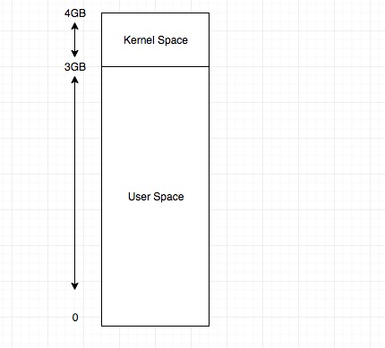
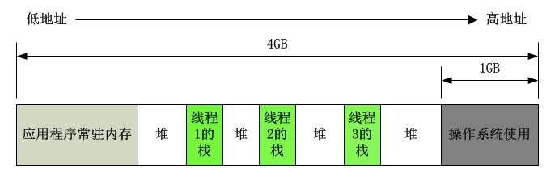
(一) 首先来仔细探讨一下占用 3GB 的 User Space
- 其示意图如下：
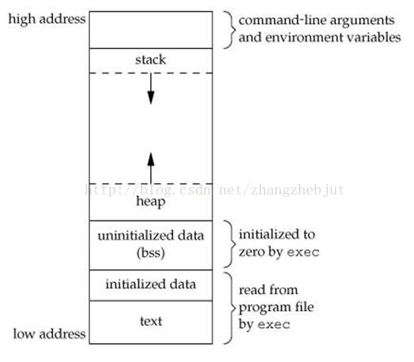
- 1 text：代码段。存放的是程序的全部代码（指令），来源于二进制可执行文件中的代码部分
- 2 initialized data（简称 data 段）和 uninitialized data（简称 bss 段）组成了数据段。其中 initialized data 简称 data， uninitialized data 简称 bss
- 3 data 段存放的是已初始化全局变量和已初始化 static 局部变量，来源于二进制可执行文件中的数据部分；
- 4 bss 段存放的是未初始化全局变量和未初始化 static 局部变量，其内容不来源于二进制可执行文件中的数据部分（也就是说：二进制可执行文件中的数据部分没有未初始化全局变量和未初始化 static 局部变量）。根据 C 语言标准规定，他们的初始值必须为 0，因此 bss 段存放的是全 0。将 bss 段清 0 的工作是由系统在加载二进制文件后，开始执行程序前完成的，系统执行这个清 0 操作是由内核的一段代码完成的，这段代码就是即将介绍的 exec 系统调用。至于 exec 从内存什么地方开始清 0 以及要清 0 多少空间，则是由记录在二进制可执行文件中的信息决定的（即：二进制文件中记录了 text、data、bss 段的大小）。可以理解 bss 段是编译二进制时就确定好了，那么为什么不是编译时就把数据全部置为 0，而是要等 kernel 的 exec 调用来做呢？原因很简单，比如 bss 段有 1000KB，那么编译时就把它置为 0，那么二进制文件放在文件系统上就要占用 1000KB 大小，但是想个办法描述一下我放到内存里运行时，需要占用 1000KB 大小，这段描述本身肯定不用 1000KB 呀。所以 Linux 系统设计时，肯定是选择了后者。
Text, BSS, Data段在编译时已经决定了进程将占用多少VM，Linux上可以通过size命令，知道这些信息：
/usr/bin/size ./a.out
- 5 内存的最高端（高地址） 内存的最高端存放的是命令行参数和环境变量，将命令行参数和环境变量放到指定位置这个操作是由 OS 的一段代码（exec 系统调用）在加载二进制文件到内存后，开始运行程序前完成的。这个应该很好理解，Linux 上开启一个进程，在该进程内都可以读到命令行参数以及环境变量。
正常情况下，Linux 进程不能对用来存放程序代码的内存区域执行写操作，即程序代码是以只读的方式加载到内存中，但它可以被多个进程安全的共享。
6 小结， 一个进程(task_struct),它的内存有如下区分（从低地址向高地址说）：
-
- text
-
- data（ initialized data）
-
- bss （ uninitialized data）
-
- heap
-
- 未分配的虚拟空间
-
- stack
-
- 命令行参数和环境变量
-
- kernel space
(二) 升华, 引入 Random Offset
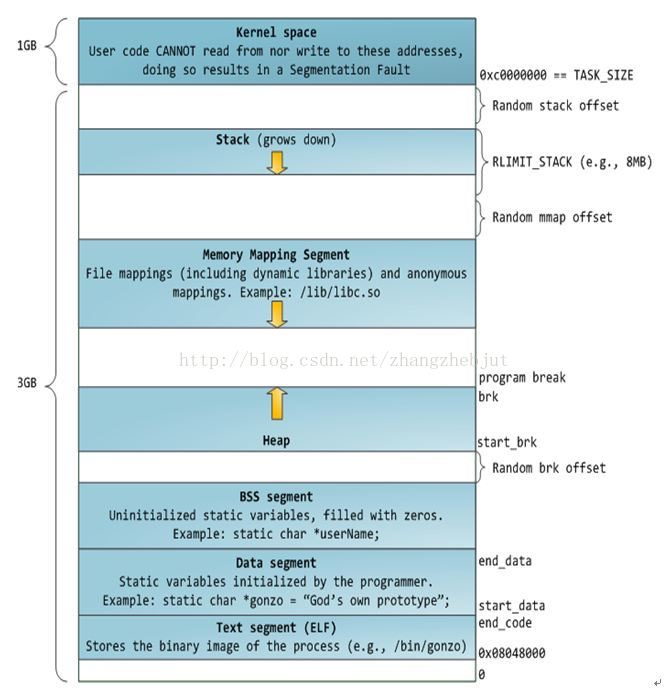
上图中，蓝色部分是真实会映射到物理内存的 VM，白色部分是不会映射到物理内存的 VM。
- 问题 1: 为什么会出现 Radom brk offset ,Random mmap offset 这些？
-
答案： 如果每个进程的 VM 地址都是一模一样的话，很容易造成安全问题，因此 Linux 通过 Radom 技术加强了这方面的安全。
-
问题 2: VM 的地址，不是从 0 开始，而是从 0x08048000
- 答案: 据说是为了捕获 NULL 指针
(三) 栈
(四) 堆空间
为什么叫堆空间呢？这里分为 2 块内存，一个是直接位于 Stack 下面的： Memory Mapping Segment ，另一个是位于 Memory Mapping Segment 下面的 heap 。这 2 块内容和起来叫堆空间。 我们首先来说说 Memory Mapping Segment
2.1 内存映射段(Memory Mapping Segmengt)
-
在栈的下方是内存映射段，内核将文件的内容直接映射到内存。任何应用程序都可以通过
Linux的mmap()系统调用请求这种映射。内存映射是一种方便高效的文件 I/O 方式，所以它被用来加载动态库。创建一个不对应于任何文件的匿名内存映射也是可能的，此方法用于存放程序的数据。在Linux中，如果你通过malloc()请求一大块内存，C运行库将会创建这样一个匿名映射而不是使用堆内存。“大块”意味着比MMAP_THRESHOLD还大，缺省128KB，可以通过mallocp()调整。 -
在
Linux中当动态分配内存大于128K时，会调用mmap函数在esp到break brk之间找一块相应大小的区域作为内存映射段返回给用户。这个esp和break brk之间，就是Memory Mapping Segment. -
-
- 首先这个
Memory Mapping Segment肯定是最大栈空间和break brk之间的空间，至于最大栈空间是不是就是 esp 指针指向的地址，这个不清楚。
- 首先这个
-
-
-
- 在
Memory Mapping Segment上分配内存称为内存映射。
- 在
-
2.2 堆
堆用于运行时内存分配。 进程通过 malloc()申请内存，小于 128KB 时，会在堆上分配。是指这段空间。
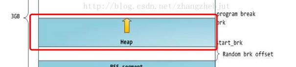
并且，它的工作模式跟栈类似，遵守LIFO原则，即后面申请的内存会先被释放。
这里的释放，不是真正的回收，只是调整break brk指针的位置。在堆上分配内存和在Memory Mapping Segment上分配内存，两者的区别是内存映射段销毁时，会释放其映射到的物理内存，而break brk指向的数据被销毁时，不释放其物理内存，只是简单将break brk回撤，其虚拟地址到物理地址的映射依旧存在，这样使的当再需要分配小额内存时，只需要增加 break brk 的值，由于这段虚拟地址与物理地址的映射还存在，于是不会触发缺页中断。只有在break brk减少足够多，占据物理内存的空闲虚拟内存足够多时，才会真正释放它们。
2.3 应用场景
- 1 malloc 小于 128k 的内存，使用 brk 分配内存，将_edata 往高地址推(只分配虚拟空间，不对应物理内存(因此没有初始化)，第一次读/写数据时，引起内核缺页中断，内核才分配对应的物理内存，然后虚拟地址空间建立映射关系)，如下图：
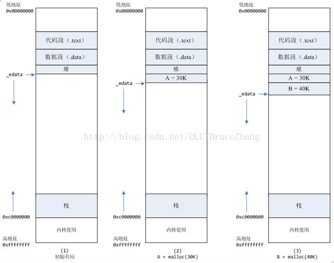
-
- 1.1 进程启动的时候，其（虚拟）内存空间的初始布局如图 1 所示。 其中，mmap 内存映射文件是在堆和栈的中间（例如 libc-2.2.93.so，其它数据文件等），为了简单起见，省略了内存映射文件。 _edata 指针（glibc 里面定义）指向数据段的最高地址。
-
- 1.2 进程调用 A=malloc(30K)以后，内存空间如图 2： malloc 函数会调用 brk 系统调用，将_edata 指针往高地址推 30K，就完成虚拟内存分配。 你可能会问：只要把_edata+30K 就完成内存分配了？ 事实是这样的，_edata+30K 只是完成虚拟地址的分配，A 这块内存现在还是没有物理页与之对应的，等到进程第一次读写 A 这块内存的时候，发生缺页中断，这个时候，内核才分配 A 这块内存对应的物理页。也就是说，如果用 malloc 分配了 A 这块内容，然后从来不访问它，那么，A 对应的物理页是不会被分配的。
-
- 1.3 进程调用 B=malloc(40K)以后，内存空间如图 3。
-
2 malloc 大于 128k 的内存，使用 mmap 分配内存，在堆和栈之间找一块空闲内存分配(对应独立内存，而且初始化为 0)，如下图：
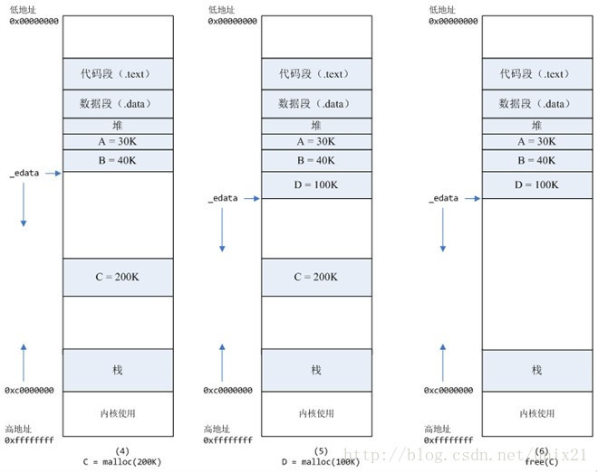
-
- 2.1 进程调用 C=malloc(200K)以后，内存空间如图 4： 默认情况下，malloc 函数分配内存，如果请求内存大于 128K（可由 M_MMAP_THRESHOLD 选项调节），那就不是去推_edata 指针了，而是利用 mmap 系统调用，从堆和栈的中间分配一块虚拟内存。 这样子做主要是因为:: brk 分配的内存需要等到高地址内存释放以后才能释放（例如，在 B 释放之前，A 是不可能释放的，这就是内存碎片产生的原因，什么时候紧缩看下面），而 mmap 分配的内存可以单独释放。 当然，还有其它的好处，也有坏处，再具体下去，有兴趣的同学可以去看 glibc 里面 malloc 的代码了。
-
- 2.2 进程调用 D=malloc(100K)以后，内存空间如图 5；
-
- 2.3 进程调用 free(C)以后，C 对应的虚拟内存和物理内存一起释放。
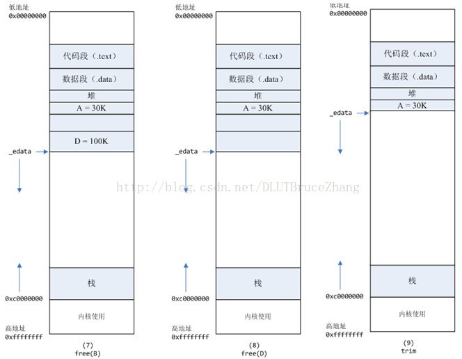
-
- 2.4 进程调用 free(B)以后，如图 7 所示： B 对应的虚拟内存和物理内存都没有释放，因为只有一个_edata 指针，如果往回推，那么 D 这块内存怎么办呢？ 当然，B 这块内存，是可以重用的，如果这个时候再来一个 40K 的请求，那么 malloc 很可能就把 B 这块内存返回回去了。
-
- 2.5 进程调用 free(D)以后，如图 8 所示： B 和 D 连接起来，变成一块 140K 的空闲内存。
-
- 2.6 默认情况下： 当最高地址空间的空闲内存超过 128K（可由 M_TRIM_THRESHOLD 选项调节）时，执行内存紧缩操作（trim）。在上一个步骤 free 的时候，发现最高地址空闲内存超过 128K，于是内存紧缩，变成图 9 所示。
三 核心数据结构及其关联关系
1 struct mm_struct
mm_struct
struct mm_struct {
//指向线性区对象的链表头
struct vm_area_struct * mmap; /* list of VMAs */
//指向线性区对象的红黑树
struct rb_root mm_rb;
//指向最近找到的虚拟区间
struct vm_area_struct * mmap_cache; /* last find_vma result */
//用来在进程地址空间中搜索有效的进程地址空间的函数
unsigned long (*get_unmapped_area) (struct file *filp,
unsigned long addr, unsigned long len,
unsigned long pgoff, unsigned long flags);
unsigned long (*get_unmapped_exec_area) (struct file *filp,
unsigned long addr, unsigned long len,
unsigned long pgoff, unsigned long flags);
//释放线性区时调用的方法，
void (*unmap_area) (struct mm_struct *mm, unsigned long addr);
//标识第一个分配文件内存映射的线性地址
unsigned long mmap_base; /* base of mmap area */
unsigned long task_size; /* size of task vm space */
/*
* RHEL6 special for bug 790921: this same variable can mean
* two different things. If sysctl_unmap_area_factor is zero,
* this means the largest hole below free_area_cache. If the
* sysctl is set to a positive value, this variable is used
* to count how much memory has been munmapped from this process
* since the last time free_area_cache was reset back to mmap_base.
* This is ugly, but necessary to preserve kABI.
*/
unsigned long cached_hole_size;
//内核进程搜索进程地址空间中线性地址的空间空间
unsigned long free_area_cache; /* first hole of size cached_hole_size or larger */
//指向页表的目录
pgd_t * pgd;
//共享进程时的个数
atomic_t mm_users; /* How many users with user space? */
//内存描述符的主使用计数器，采用引用计数的原理，当为0时代表无用户再次使用
atomic_t mm_count; /* How many references to "struct mm_struct" (users count as 1) */
//线性区的个数
int map_count; /* number of VMAs */
struct rw_semaphore mmap_sem;
//保护任务页表和引用计数的锁
spinlock_t page_table_lock; /* Protects page tables and some counters */
//mm_struct结构，第一个成员就是初始化的mm_struct结构，
struct list_head mmlist; /* List of maybe swapped mm's. These are globally strung
* together off init_mm.mmlist, and are protected
* by mmlist_lock
*/
/* Special counters, in some configurations protected by the
* page_table_lock, in other configurations by being atomic.
*/
mm_counter_t _file_rss;
mm_counter_t _anon_rss;
mm_counter_t _swap_usage;
//进程拥有的最大页表数目
unsigned long hiwater_rss; /* High-watermark of RSS usage */、
//进程线性区的最大页表数目
unsigned long hiwater_vm; /* High-water virtual memory usage */
//进程地址空间的大小，锁住无法换页的个数，共享文件内存映射的页数，可执行内存映射中的页数
unsigned long total_vm, locked_vm, shared_vm, exec_vm;
//用户态堆栈的页数，
unsigned long stack_vm, reserved_vm, def_flags, nr_ptes;
//维护代码段和数据段
unsigned long start_code, end_code, start_data, end_data;
//维护堆和栈
unsigned long start_brk, brk, start_stack;
//维护命令行参数，命令行参数的起始地址和最后地址，以及环境变量的起始地址和最后地址
unsigned long arg_start, arg_end, env_start, env_end;
unsigned long saved_auxv[AT_VECTOR_SIZE]; /* for /proc/PID/auxv */
struct linux_binfmt *binfmt;
cpumask_t cpu_vm_mask;
/* Architecture-specific MM context */
mm_context_t context;
/* Swap token stuff */
/*
* Last value of global fault stamp as seen by this process.
* In other words, this value gives an indication of how long
* it has been since this task got the token.
* Look at mm/thrash.c
*/
unsigned int faultstamp;
unsigned int token_priority;
unsigned int last_interval;
//线性区的默认访问标志
unsigned long flags; /* Must use atomic bitops to access the bits */
struct core_state *core_state; /* coredumping support */
#ifdef CONFIG_AIO
spinlock_t ioctx_lock;
struct hlist_head ioctx_list;
#endif
#ifdef CONFIG_MM_OWNER
/*
* "owner" points to a task that is regarded as the canonical
* user/owner of this mm. All of the following must be true in
* order for it to be changed:
*
* current == mm->owner
* current->mm != mm
* new_owner->mm == mm
* new_owner->alloc_lock is held
*/
struct task_struct *owner;
#endif
#ifdef CONFIG_PROC_FS
/* store ref to file /proc/<pid>/exe symlink points to */
struct file *exe_file;
unsigned long num_exe_file_vmas;
#endif
#ifdef CONFIG_MMU_NOTIFIER
struct mmu_notifier_mm *mmu_notifier_mm;
#endif
#ifdef CONFIG_TRANSPARENT_HUGEPAGE
pgtable_t pmd_huge_pte; /* protected by page_table_lock */
#endif
/* reserved for Red Hat */
#ifdef __GENKSYMS__
unsigned long rh_reserved[2];
#else
/* How many tasks sharing this mm are OOM_DISABLE */
union {
unsigned long rh_reserved_aux;
atomic_t oom_disable_count;
};
/* base of lib map area (ASCII armour) */
unsigned long shlib_base;
#endif
};
-
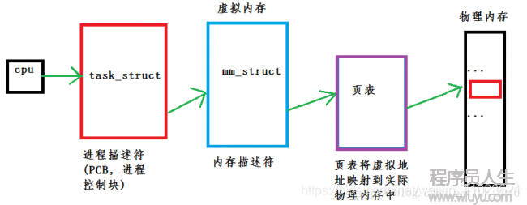
-
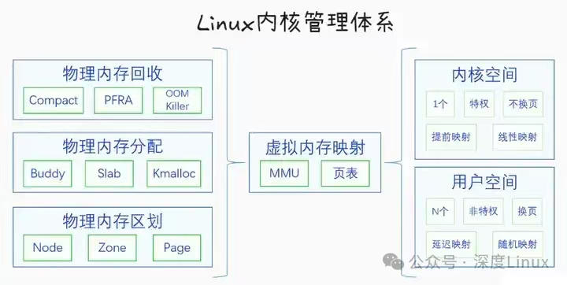
-
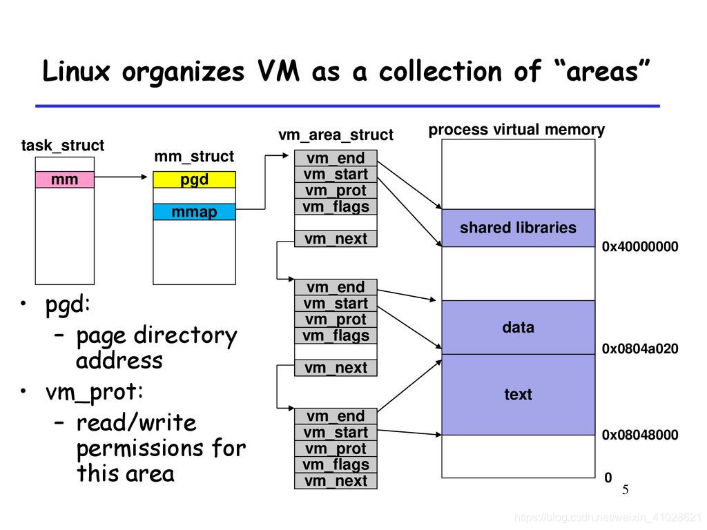
2 struct vm_area_struct
struct vm_area_struct {
/* The first cache line has the info for VMA tree walking. */
unsigned long vm_start; /* Our start address within vm_mm. */
unsigned long vm_end; /* The first byte after our end address within vm_mm. */
/* linked list of VM areas per task, sorted by address */
struct vm_area_struct *vm_next, *vm_prev;
struct rb_node vm_rb;
unsigned long rb_subtree_gap;
/* Second cache line starts here. */
struct mm_struct *vm_mm; /* The address space we belong to. */
pgprot_t vm_page_prot; /* Access permissions of this VMA. */
unsigned long vm_flags; /* Flags, see mm.h. */
struct {
struct rb_node rb;
unsigned long rb_subtree_last;
} shared;
struct list_head anon_vma_chain; /* Serialized by mmap_sem & * page_table_lock */
struct anon_vma *anon_vma; /* Serialized by page_table_lock */
/* Function pointers to deal with this struct. */
const struct vm_operations_struct *vm_ops;
/* Information about our backing store: */
unsigned long vm_pgoff; /* Offset (within vm_file) in PAGE_SIZE units */
struct file * vm_file; /* File we map to (can be NULL). */
void * vm_private_data; /* was vm_pte (shared mem) */
#ifdef CONFIG_SWAP
atomic_long_t swap_readahead_info;
#endif
#ifndef CONFIG_MMU
struct vm_region *vm_region; /* NOMMU mapping region */
#endif
#ifdef CONFIG_NUMA
struct mempolicy *vm_policy; /* NUMA policy for the VMA */
#endif
struct vm_userfaultfd_ctx vm_userfaultfd_ctx;
} __randomize_layout;
- 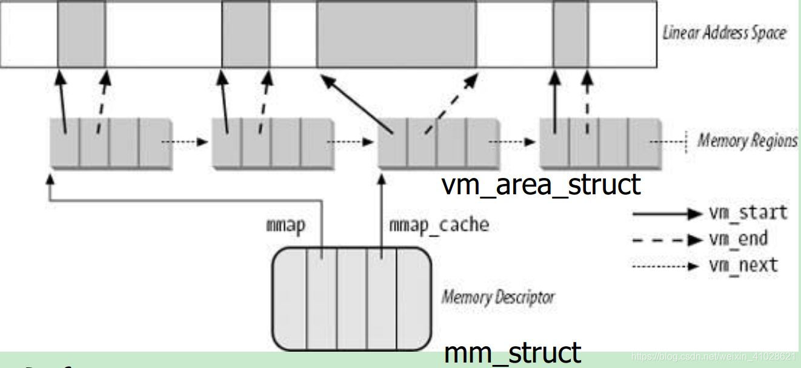
- 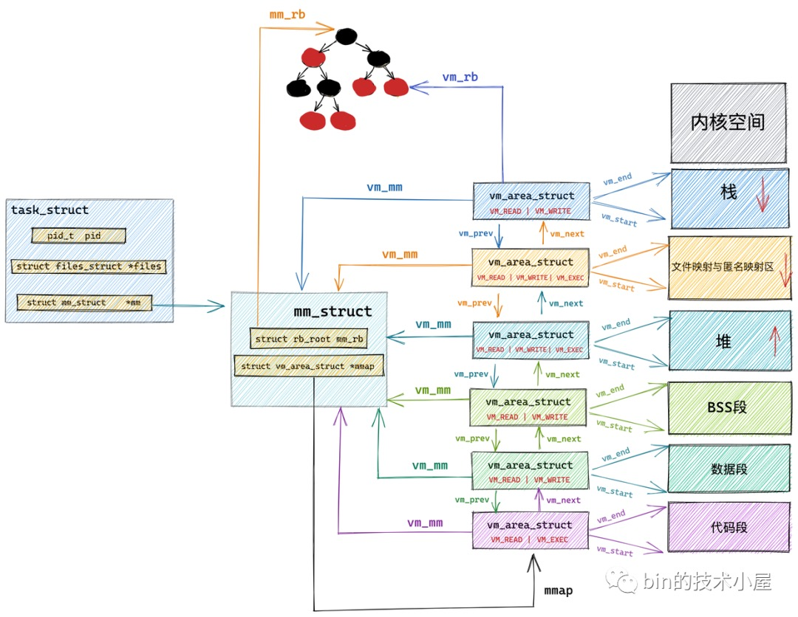
3 /proc/${pid}/maps
-
该显示进程映射了的内存区域和访问权限。对应内核中的操作集为 proc_pid_maps_op，具体的导出函数为 show_map。内核中进程的一段地址空间用一个 vm_area_struct 结构体表示，所有地址空间存储在 task->mm->mmap 链表中。
-
一个文件可以映射到进程的一段内存区域中，映射的文件描述符保存在 vm_area_struct->vm_file 域中，这种内存区域叫做有名内存区域，相反，属于匿名映射内存区域。vm_area_struct 每项对应解析如下表所示
-
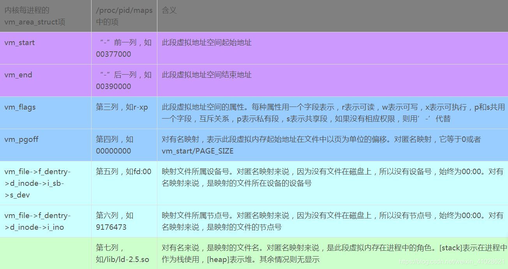